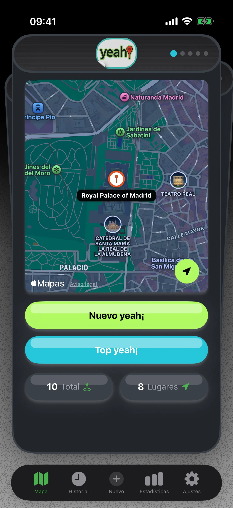
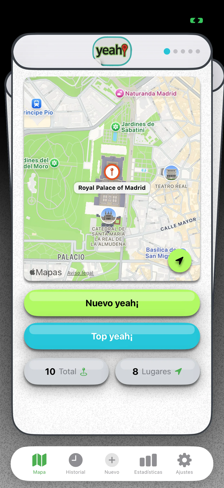
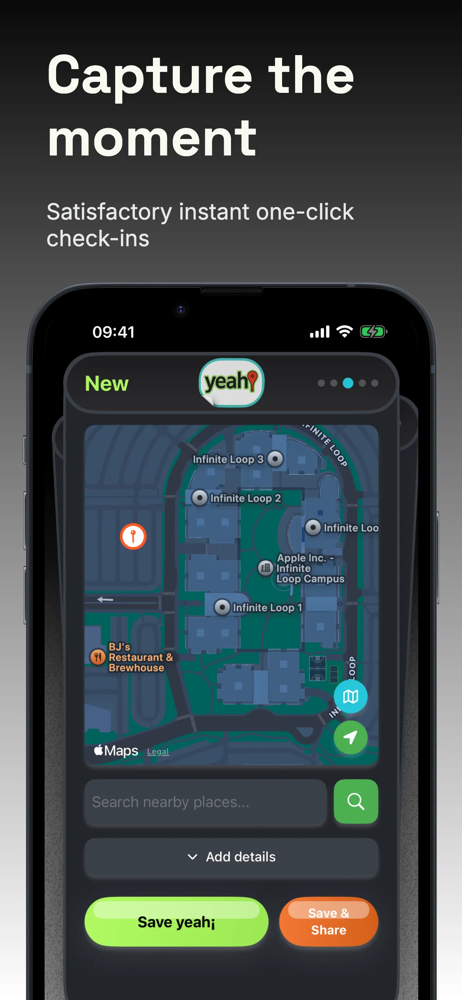
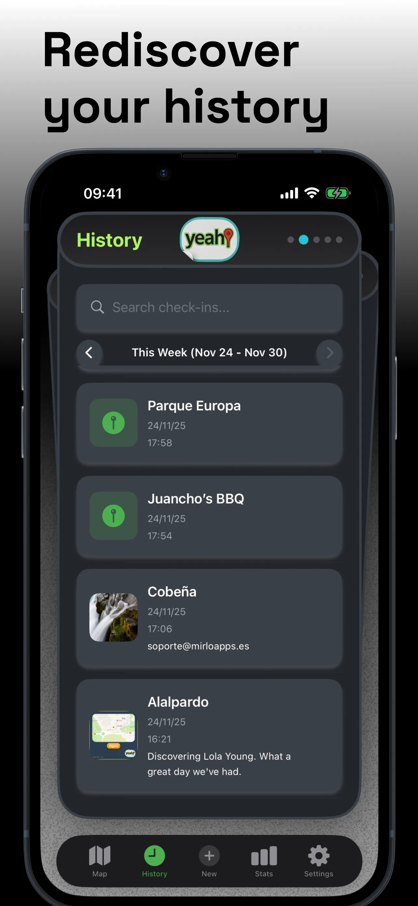
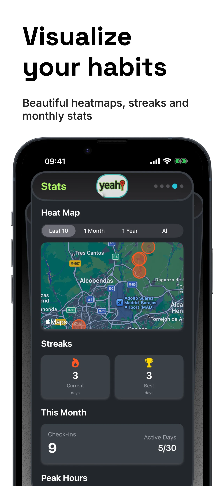

Pick a place
Choose somewhere nearby, find it on the map or add a custom place of your own.
Your places, your history
Check in with one tap, save places you love and look back on the routes and moments that make up your life.


A personal place diary
yeah! brings your check-ins, favorite places and journeys together on a map. Add a note or photo, keep a history, and explore the patterns behind the places you visit.
Simple by design
Choose somewhere nearby, find it on the map or add a custom place of your own.
Add a note or photo if you like, then save the check-in to your history.
Return to your history, follow a journey or see your check-ins in statistics.
A little peek inside



Find your own way around
Tools to save places, follow your routes and make sense of the places you return to.
Save a visit from the app, a widget or a Shortcut.
Add and keep custom places that are missing from the map.
Premium can check you in when you enter a zone you choose, using low-power location monitoring.
PremiumRecord trips and routes, see their path on the map and revisit them later.
Browse your check-ins and explore heat maps, streaks and activity summaries.
Explore the countries, regions and municipalities represented in your check-ins.
PremiumUse Yeah! actions with Apple Shortcuts and Siri to start check-ins and open your places faster.
Check in, see recent places and use Yeah! features from supported Apple devices.
Good to know
yeah! is a place check-in and travel diary for saving visits, places and journeys on a personal map and reviewing them later.
Yes. Add a custom place and keep it in your saved places for future check-ins.
With Premium, set a zone and enable low-power location monitoring. yeah! can create a check-in when you enter that zone. Location access must be allowed.
It shows the countries, regions and municipalities represented in your check-in history. Territory Conquests is a Premium feature.
Premium adds features including automatic check-ins, Territory Conquests, iCloud sync, widgets and advanced statistics. The free plan has a limited number of check-ins.
Yes. yeah! supports iPad, with layouts adapted for iPad and iPhone Duo.
New things, same yeah!
Updates to the way you save and explore your places.
Start your place diary